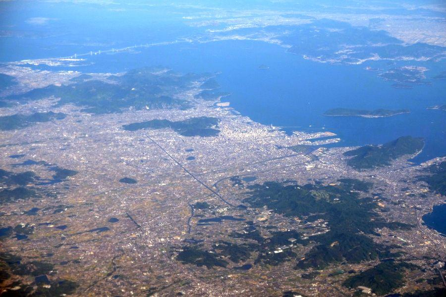
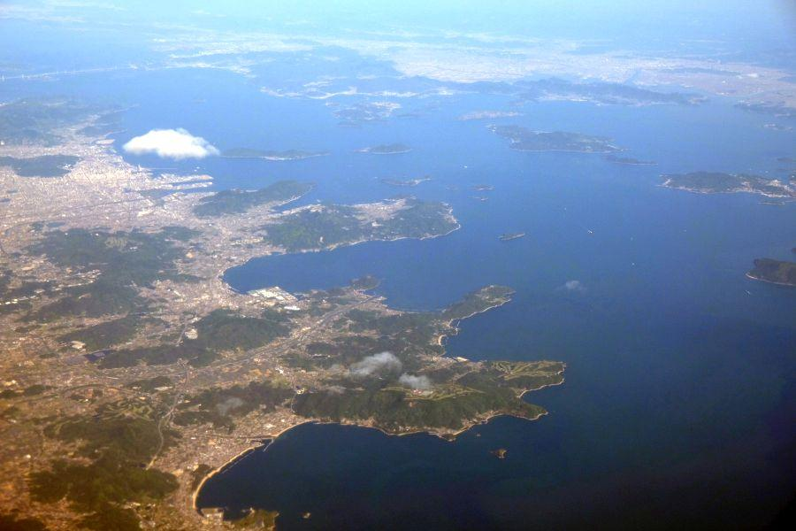
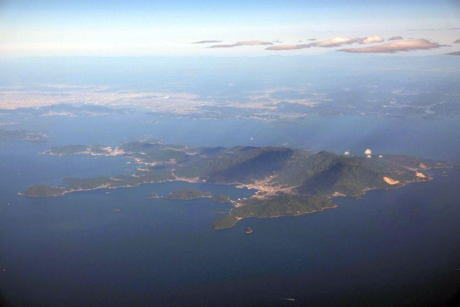
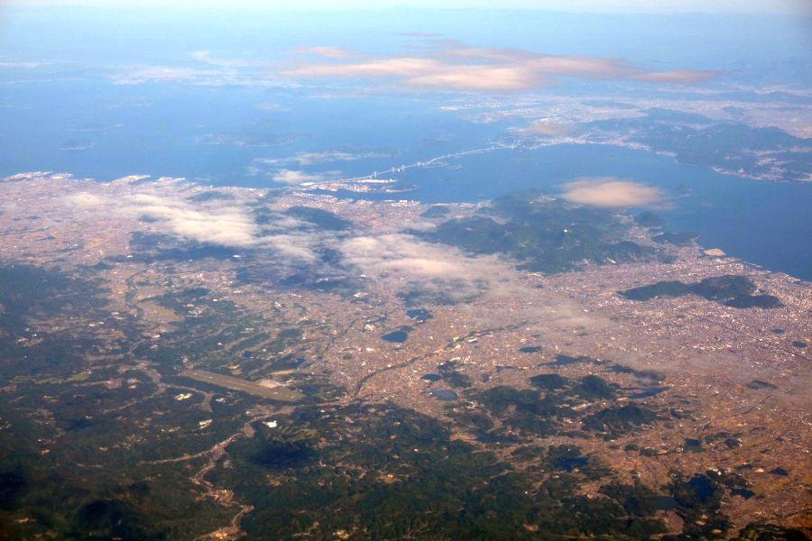
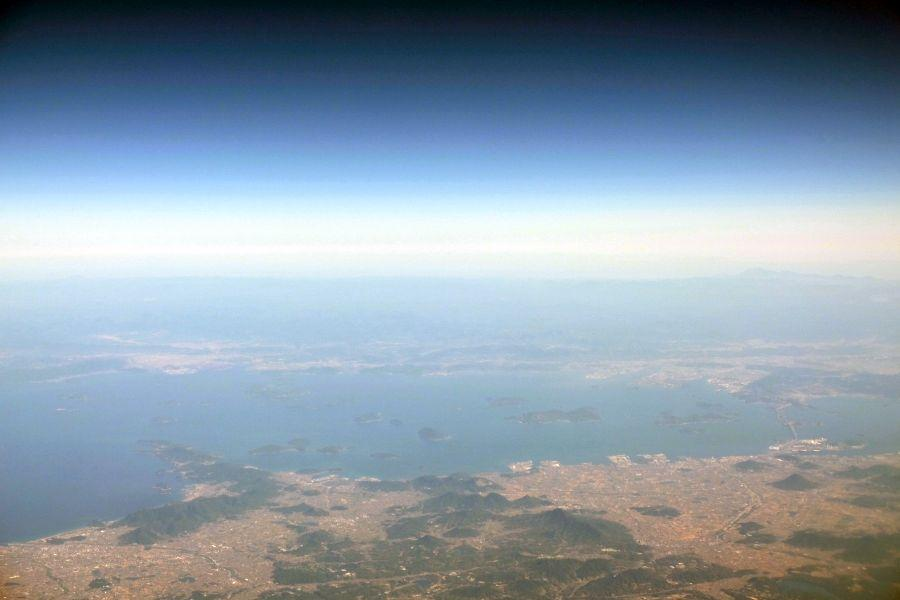
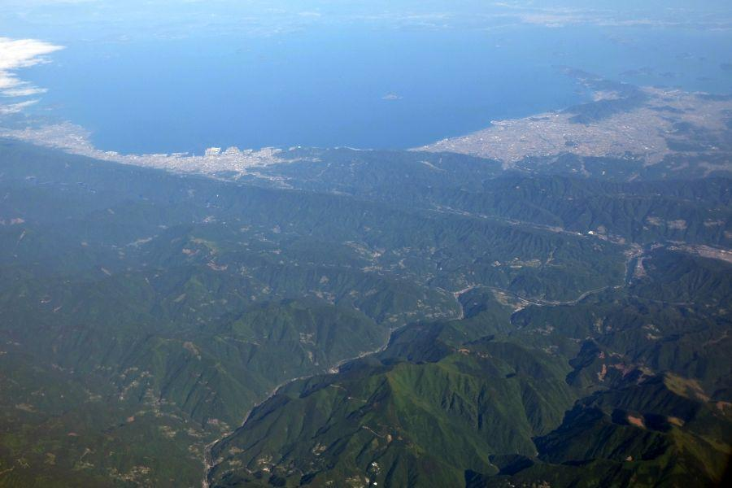
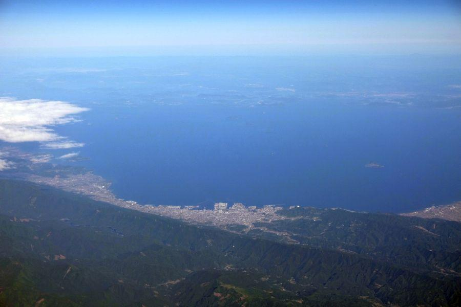

空から見る香川県 < 香川県中讃・西讃ほか >

香川県は日本一面積が小さい県ですが、空から見ると どんな形をしているのでしょうか。
コンパクトなことが幸いして、その全景を眺めることは容易です。
高松市中心部

瀬戸の都こと 高松市。
奥に瀬戸大橋が見えていますが、架橋前は本州・四国を行き来する 本四連絡最大の拠点となり、四国の中心として大いに栄えました。
往時からすると市街地が南部(内陸側)に広がってきている等 変化がありますが、四国を代表する都市の一つであることは変わりません。
中央斜めに走る線は高松自動車道
岸壁が伸びているのが高松港
高松港と瀬戸大橋の間に浮かぶ yen錐形の島は小槌島(こづちじま)。島を真っ二つに分ける県境線があり、南部は香川県・北部を岡山県が管轄しています。
さぬき市周辺と島嶼部

丸く入り組んだ湾は 志度湾。
五剣山に風が遮られる静かな入り江で、牡蠣の養殖が盛ん。またその形状から隕石が落ちて窪んだ説があります。
下の方に弓なりに伸びる浜は 津田の松原。すぐ近くに高速道路のサービスエリアがあります。
浮かんでいる雲(高松港上空付近)の右は 女木島(めぎじま)、男木島(おぎじま)。
その上のやや地肌が見えているのは直島(なおしま)。かつて精錬所による煤煙により 樹木が枯れてしまった痕が見られます。
その右は井島(いしま)。島内に県境が設定されており、岡山県側の呼称は石島(いしま・読み同じ)。集落は岡山県部分の北部にしかありません。
その右下は豊島(てしま)。現在は緑に覆われた自然が豊かで アートの島を構成する離島の一つですが、産廃投棄問題で揺れた島でもあります。
画像の一番右に顔を覗かせているのは、小豆島(しょうどしま)です。
見えている海域の島々は その殆どが香川県の管轄。特に直島は本州の方が近く、岡山の宇野港からフェリーに乗って15分で渡ることができますが、高松港からは1時間かかります。
この根拠となる事柄は非常に古く、讃岐の出で 幾つもの海を股にかけるほど 大きな勢力を誇った、塩飽水軍(しわくすいぐん)の所領地に由来すると言われています。
関連記事 > 2018,1/18 海の安全を願う金毘羅権現のご利益 < 波止浜港 / 愛媛県今治市 >
小豆島

瀬戸内海最高峰の星ヶ城山(ほしがじょうさん・812m)を誇る小豆島。
香川・岡山・兵庫各県からフェリーが就航していて、ここもやはり四国からより本州の方が近い。実際 電力の供給は、中国電力の管轄になっています。
中央部に広がるのが草壁の街。近年小豆島高校が甲子園に出場するなど 話題になりました。
元々は醸造が盛んな地域で、醤油工場や それを原料とする佃煮が特産品。
映画・二十四の瞳の舞台となった 岬の分教場は、草壁の湾の出口付近。田浦(たのうら)集落にありました。
高松市南部

高松市民の認識では、高松自動車道より北(海側)が市街、南(山側)が郊外という認識です。
(平成の大合併で高松市になった町は除く)
特徴としては、高松空港が郊外の一番南端に位置します。
今年平成30年に民営化され 新たにLCCの誘致が行われる等、中四国の空の玄関を目指して 活発な動きがあります。
自分が運営するゲストハウスそらうみがあるのは 空港と海(高松駅)のちょうど中間辺り。現在のところ高松空港最寄りゲストハウスです。
奥に瀬戸大橋が見えていますが、高松市からの距離感と そこまでに山と丘陵地帯があることがわかります。
ここが讃岐國の中にある文化圏の分かれ目で、この辺りを境に中讃・西讃と文化圏が分かれます。
丸亀市周辺

讃岐國としては 高松より丸亀の方が歴史は古い。うどんの発祥地もこちらのエリア。
特に城下町である丸亀市民は、位置・歴史共に 香川県の中心という意識をお持ちなように思います。
左の突き出た半島は 荘内半島(しょうないはんとう)。
近年 桜のスポットとして、人気に火が付いた場所です。
そこと瀬戸大橋の間に いくつも離島があり、例によって見えている島の半分以上は香川県の管轄となっています。
旅する者としては 丸亀市の島は丸亀港から、多度津町の島は多度津港から...
という具合に、島と島の間を行き来できないことが悩ましい点。
離島航路はどこも赤字で 各自治体の支援によって成り立っている面が大きいので、難しい問題です。
荘内半島

瀬戸内海に突き出た荘内半島を境に、海の色・様子が変わると言われます。
日本のウユニ塩湖
と話題になっている父母ヶ浜(ちちぶがはま)は その半島の付け根、左側。インスタグラムにupされている写真等から 広大な浜を想像してしまうところですが、実際には猫の額ほどの砂浜です。
荘内半島の西側(左)に広がるのは、観音寺市(かんおんじし)。砂浜に描かれた 寛永通宝の砂絵が有名です。
左隅に浮かぶ島が 香川県最西端の地となる、伊吹島(いぶきじま)。
いりこ(カタクチイワシ)漁が有名であり、特産品になっています。
讃岐國がうどんの産地が成り得たのは その原料が全て揃う環境だったことが大きい。
そこそこ広い土地があり、雨が少なく 小麦の栽培に向いている... 丸亀市・善通寺市周辺
出汁となるいりこが獲れた... 観音寺市周辺
塩の生産が盛んだった... 宇多津町・坂出市周辺
つゆとなる醤油の製造が盛ん... 小豆島
香川県の土地風土が育んだグルメが、讃岐うどんです。
阿波池田・四国中央市

讃岐平野が終わり 西(左)へ進むと県境を越えて、愛媛県に入ります。
または山越えて吉野川沿いへ出ると、徳島県に入ります。
前者は四国中央
後者は四国のへそ
を名乗ります。

四国のへそを名乗る阿波池田は、地場産業としては刻みタバコの生産。立地としては 四国各都市への交通の要衝として、宿屋等が非常に賑わったエリア。
高校野球ファンの方にとっては 「やまびこ打線の池田高校」 と言えば、ピンとくるのではないでしょうか。
現在は高速道路が別の場所から分岐していたり、国民の嗜好や 産業構造の変化により、拠点としての役割は譲った形です。
関連記事 >
2017,1/23 手作りの田舎そばを食べに、そばやへ < そばや / 徳島県三好市池田町 >
2017,11/26 四国の鉄道が繋がった瞬間を見届けた立会人 < 三縄駅 / 徳島県三好市池田町 >
2018,1/30 やまびこ打線で一世を風靡した高校がある街の珍地名 < 阿波池田駅 / 徳島県三好市池田町 >

こちら愛媛県四国中央市。
高松道
松山道
高知道
徳島道
これらが交わる場所であり、四国四都市へ ほぼ等しい一時間前後で行けることが、四国中央たる所以。
(少し強引な解釈なように思いますが...)
それよりも この街の存在感は製紙工場群。トイレットペーパー等 家庭紙の多くがこの街で生産されています。
関連記事

2018,2/17 空から見る高知県 < 高知県西部・中部 >